Double-tap a key, record your screen. Screenie handles the rest — smart zoom on clicks, speed ramping through idle moments, smooth cursor tracking. Open source.

Recording starts instantly. A floating pill appears with a live timer. No menus, no setup, no dialogs.
Features
Idle moments speed up 4–8x. Active parts stay normal. A 30s recording becomes a tight clip automatically.
Each click triggers a smooth zoom-in with spring physics. Camera pans between click positions cinematically.
Real macOS cursor rendered with perfect sync. Expanding ring highlights every click so viewers can follow along.
No dock icon, no window. Lives in your menu bar. Double-tap Control to record, double-tap to stop.
Finished video saves to your clipboard. A preview HUD appears in the corner — click to open or share.
Synthesized start/stop tones and a floating recording pill with live timer so you always know the state.
Built in public. MIT licensed. Star us on GitHub or fork and make it yours.
Download Screenie, double-tap Control, and see for yourself.
Download for Mac — Free